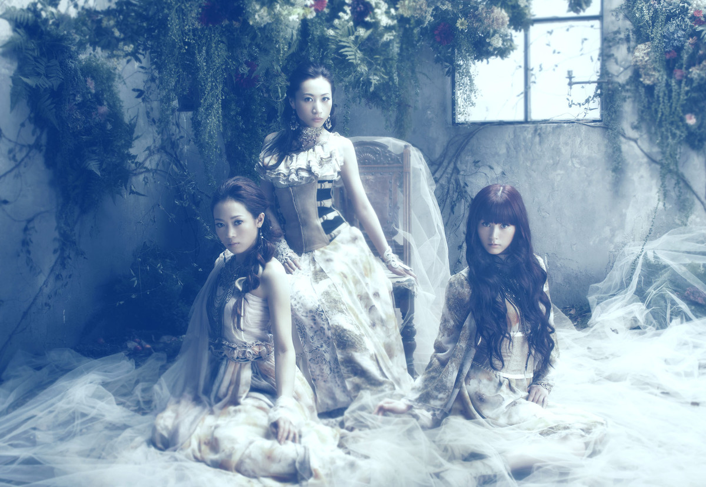

Kalafina
Kalafina（台：华丽菲娜，陆：卡拉菲娜）是已经解散的日本女子音乐团体，
隶属于SPACE CRAFT（经纪公司）与SACRA MUSIC（唱片公司）。
由梶浦由记为制作空之境界剧场版主题曲而在2007年组成。
介绍
- 2007年梶浦由记因制作空之境界剧场版主题曲而组成的团体
- 2009年5月，Maya退出Kalafina，同时官方将Kalafina定为Wakana、Keiko、Hikaru三人的女子团体
演唱会
- 2009年4月29日第一次参加演唱会演出的“Revo＆梶浦由记 Presents ‘Dream Port
- 2008’”:198 2009年5月19日第一次的演唱会的Shibuya O-WEST（Kalafina Closed Premium Live），由购买专辑与单曲者中抽选500名
- 2009年5月22日第一次海外演出（于美国波士顿举办的Anime Boston）
- 2009年8月26日第一次公开售票的演唱会，地点在Shibuya O-EAST（Kalafina LIVE 2009 "storia"）
- 2010年2月26日第一次在海外举办巡回演唱会，地点在台北市的1710 Live Studio（现在的花漾Hana展演空间，Kalafina LIVE TOUR 2010 in Asia）
- 2015年2月28日、3月1日第一次踏上日本武道馆（Kalafina LIVE THE BEST 2015 "Red Day" & "Blue Day"）
- 2018年1月23日三度踏上日本武道馆，举办十周年纪念演唱会（Kalafina 10th
- Anniversary LIVE 2018） 2018年3月31日最后一次参加的演唱会的“Toyosu Music Collaboration〜チームスマイル東日本大震災復興支援LIVE〜@豊洲PIT”
作品
| 发行日 | 标题 |
|---|
| 2008年1月23日 | oblivious |
| 2008年7月30日 | sprinter/ARIA |
| 2008年12月24日 | fairytale |
| 2009年3月4日 | Lacrimosa |
| 2009年7月1日 | storia |
| 2009年10月28日 | progressive |
| 2010年1月20日 | 光之旋律（光の旋律） |
| 2010年9月15日 | 璀璨天空中的寂静（輝く空の静寂には） |
| 2011年2月16日 | Magia |
| 2012年4月18日 | to the beginning |
| 2012年7月18日 | 月之祭典（moonfesta～ムーンフェスタ～） |
| 2012年10月24日 | 圣光（ひかりふる） |
| 2013年10月2日 | 哈利路亚（アレルヤ） |
| 2013年11月6日 | 银色庭园（君の銀の庭） |
| 2014年8月6日 | heavenly blue |
| 2014年11月19日 | believe |
| 2015年5月13日 | ring your bell |
| 2015年8月12日 | One Light |
| 2016年8月10日 | blaze |
| 2017年4月5日 | into the world / 童话故事（メルヒェン） |
| 2017年8月9日 | 百火撩乱 |
照片

解散
- 2018年2月21日，梶浦由记在Twitter上宣布离开SPACE CRAFT，将成立自己的事务所
- 2018年4月1日,Keiko因合约期满离开经纪公司SPACE CRAFT
- 2018年11月2日，SPACE CRAFT宣布Hikaru已经在10月20日约满离开
- 2019年3月13日，SPACE CRAFT表示因制作人与成员的陆续离开，恢复活动的可能性极低，所以决定解散